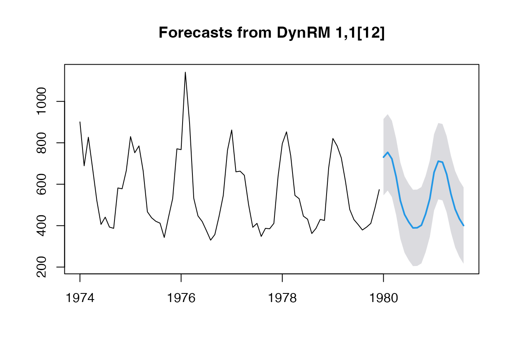
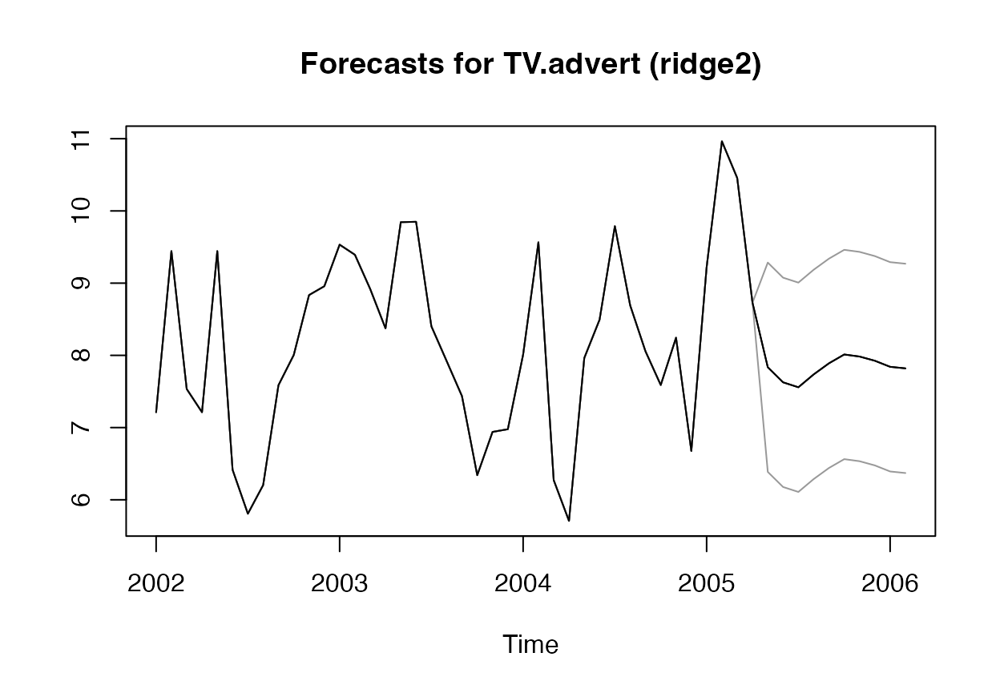

ahead is a package for univariate and multivariate time series forecasting. Five forecasting methods are implemented so far, as of October 13th, 2021.
armagarchf: univariate time series forecasting method using simulation of an ARMA(1, 1) - GARCH(1, 1)dynrmf: univariate time series forecasting method adapted from forecast::nnetar to support any Statistical/Machine learning model (such as Ridge Regression, Random Forest, Support Vector Machines, etc)eatf: univariate time series forecasting method based on combinations of forecast::ets, forecast::auto.arima, and forecast::thetaf
ridge2f: multivariate time series forecasting method, based on quasi-randomized networks and presented in this paper
varf: multivariate time series forecasting method using Vector AutoRegressive model (VAR, mostly here for benchmarking purpose)Here’s how to install the package:
1st method: from R-universe
In R console:
options(repos = c( techtonique = 'https://techtonique.r-universe.dev', CRAN = 'https://cloud.r-project.org')) install.packages("ahead")
2nd method: from Github
In R console:
devtools::install_github("Techtonique/ahead")
Or
remotes::install_github("Techtonique/ahead")
And here are the packages that will be used in this vignette:
In this section, we illustrate dynrmf forecasting, with Random Forest and SVM. Do not hesitate to type ?dynrmf, ?armagarchf or ?eatf in R console for more details and examples.
# Plotting forecasts # With a Random Forest regressor, an horizon of 20, # and a 95% prediction interval plot(dynrmf(fdeaths, h=20, level=95, fit_func = randomForest::randomForest, fit_params = list(ntree = 50), predict_func = predict))
# With a Support Vector Machine regressor, an horizon of 20, # and a 95% prediction interval plot(dynrmf(fdeaths, h=20, level=95, fit_func = e1071::svm, fit_params = list(kernel = "linear"), predict_func = predict))

plot(dynrmf(Nile, h=20, level=95, fit_func = randomForest::randomForest, fit_params = list(ntree = 50), predict_func = predict))
In this section, we illustrate ridge2f and varf forecasting. Do not hesitate to type ?ridge2f or ?varf in R console for more details on both functions.
# Forecast using ridge2 # With 2 time series lags, an horizon of 10, # and a 95% prediction interval fit_obj_ridge2 <- ahead::ridge2f(fpp::insurance, lags = 2, h = 10, level = 95) # Forecast using VAR fit_obj_VAR <- ahead::varf(fpp::insurance, lags = 2, h = 10, level = 95) # Plotting forecasts # fpp::insurance contains 2 time series, Quotes and TV.advert plot(fit_obj_ridge2, "Quotes")
plot(fit_obj_VAR, "Quotes")
plot(fit_obj_ridge2, "TV.advert")

plot(fit_obj_VAR, "TV.advert")